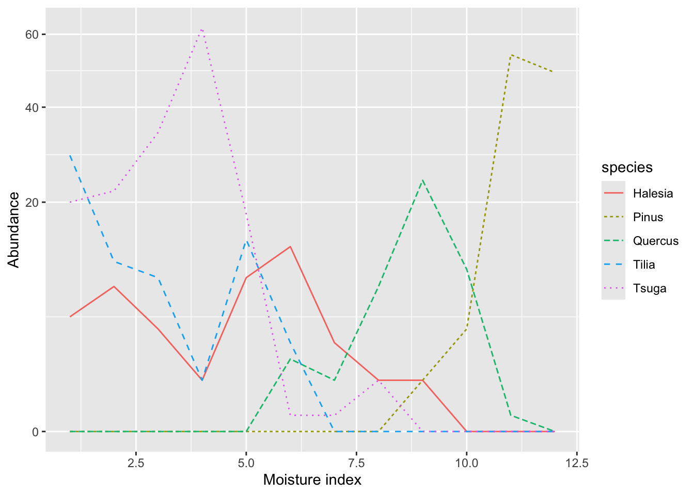
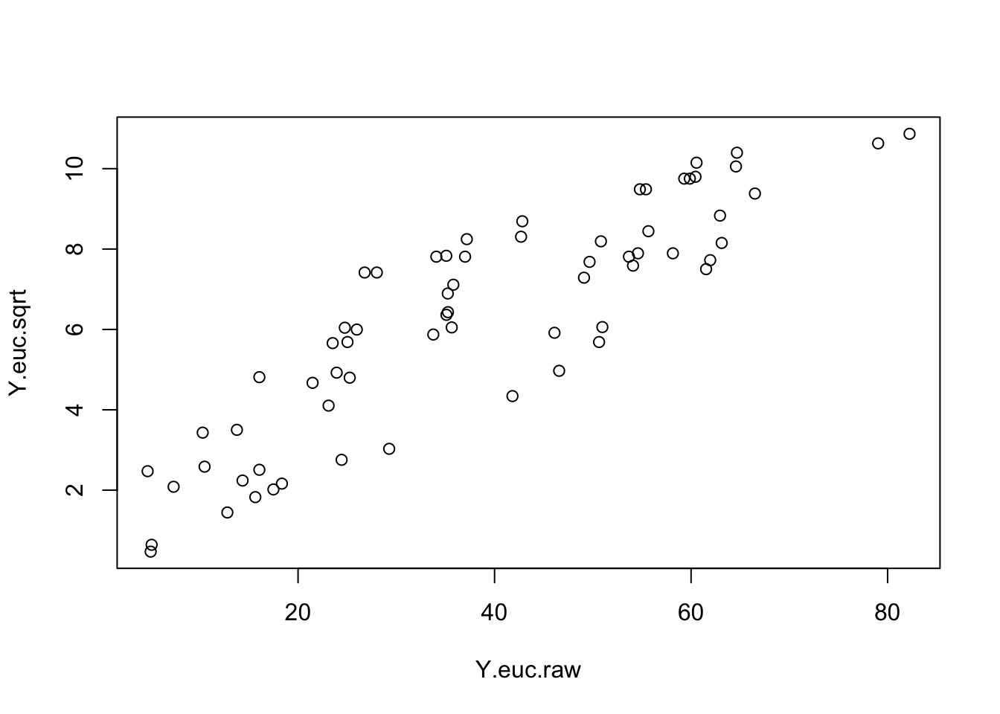
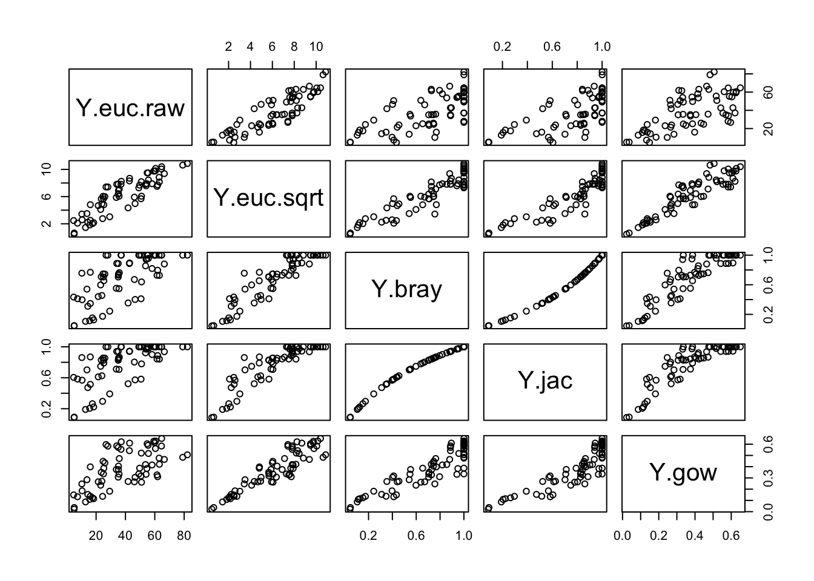
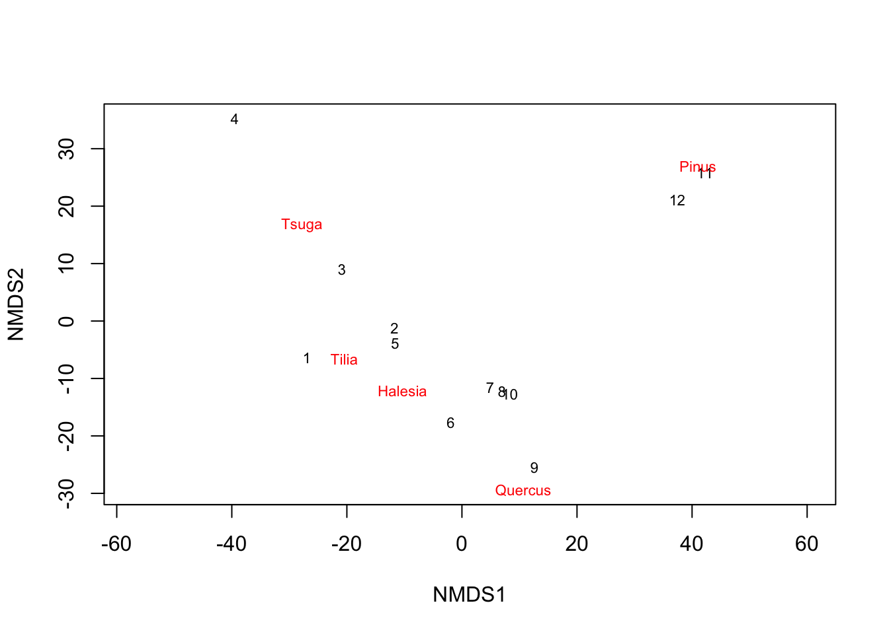
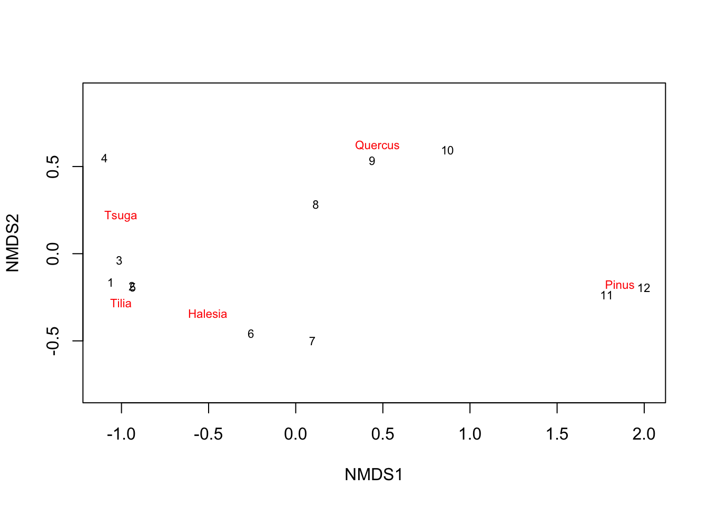
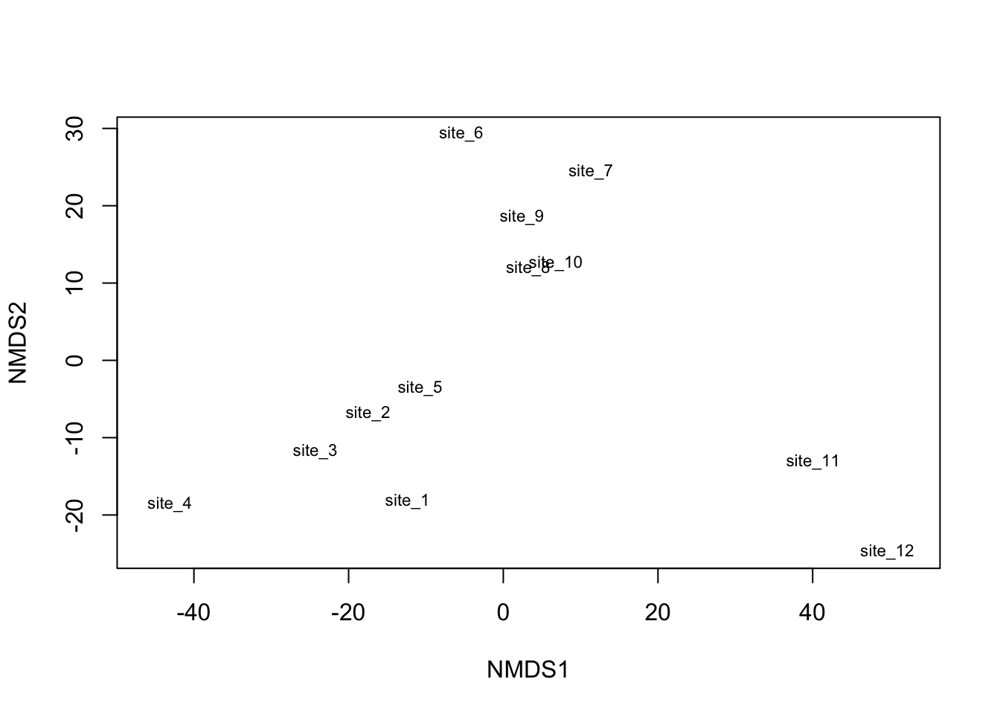
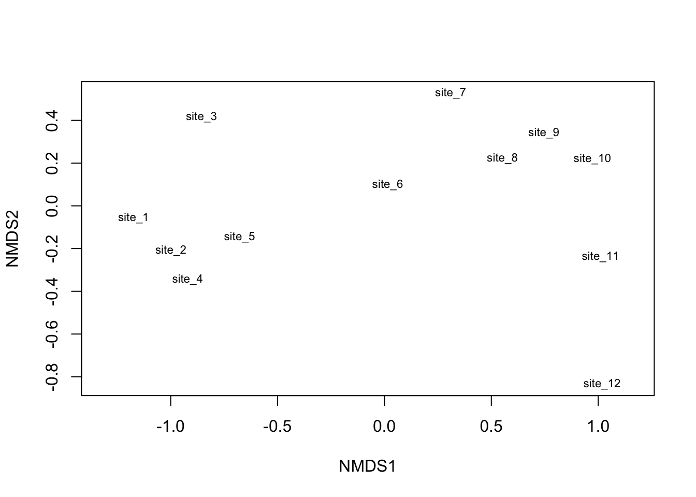

library(vegan) # multivariate analysis
library(tidyverse) # data wrangling and graphicsAppendix A — Community structure
A.1 Goals
In this chapter, you will,
- represent multivariate community data with quantitative summaries and graphical displays.
- Describe patterns of diversity, including evenness and richness.
A.2 Preparatory steps
- General background lectures: Download the PDF slides and watch the video on community structure and diversity before proceeding.
- Data: go to our class data repository, and download
WHITTAKER_TABLE_3.csv.- Make sure the file remains in the same simple format, “comma separated values” (.csv).
- Put
WHITTAKER_TABLE_3.csvin your working directory,Rwork. - Continue to make sure the file remains in the same simple format, “comma separated values” (.csv).
- Find out what you need for the deliverables.
A.3 Background
We have seen examples of how the size of populations are influenced by the physical environment and interactions with other species which may be prey or enemies or mutualists. In this section, we describe how those populations may change in concert with each other and so constitute communities.
A.4 DRAFT
A.5 Do not use for BIO 209W until the following is shortened and edited.
title: “Community Structure With Data From Whittaker (1956)” format: pdf date: 2023-11-26 author: Hank Stevens —
A.6 Community structure
This is a super short introduction to working with multivariate data in which we have lots of species of a similar type (e.g., plant community, fungal community) at multiple sites or samples.
Make a note of the new functions or commands we introduce.
A.6.1 Background
Make sure you have read Primer secs. 14-14.2, and seen Hank’s lecture on community structure.
A great reference for all this is: McCune, B. and J. Grace with contribution from D. Urban. 2002. Analysis of Ecological Communities. MJM Software, Gleneden Beach, Oregon. 304 pages.
Dr. Mike Palmer has a great website on ordination, The Ordination Website: https://ordination.okstate.edu/
A good introduction to ordination in vegan, written by the first author of the vegan package, is available is you Google “Oksanen ordination vegan”.
Next load relevant data analysis packages. The new one is vegan, for vegetation analysis.
Let’s use the following data (Table A.1), which is a small subset of Table 3 from Robert Whittaker’s gradient analysis of forests in the Smoky Mountains (Whittaker 1956).
d <- data.frame(
moisture = 1:12,
Halesia = c(5,8,4,1,9,13,3,1,1, 0,0,0),
Pinus = c(0,0,0,0,0,0,0,0,1,4,54,49),
Quercus = c(0,0,0,0,0,2,1,8,24,10,.1,0),
Tilia = c(29,11,9,1,14,3, 0,0,0,0,0,0),
Tsuga = c(20,22,34,62,18,.1,.1,1, 0,0,0,0)
)
d| moisture | Halesia | Pinus | Quercus | Tilia | Tsuga |
|---|---|---|---|---|---|
| 1 | 5 | 0 | 0.0 | 29 | 20.0 |
| 2 | 8 | 0 | 0.0 | 11 | 22.0 |
| 3 | 4 | 0 | 0.0 | 9 | 34.0 |
| 4 | 1 | 0 | 0.0 | 1 | 62.0 |
| 5 | 9 | 0 | 0.0 | 14 | 18.0 |
| 6 | 13 | 0 | 2.0 | 3 | 0.1 |
| 7 | 3 | 0 | 1.0 | 0 | 0.1 |
| 8 | 1 | 0 | 8.0 | 0 | 1.0 |
| 9 | 1 | 1 | 24.0 | 0 | 0.0 |
| 10 | 0 | 4 | 10.0 | 0 | 0.0 |
| 11 | 0 | 54 | 0.1 | 0 | 0.0 |
| 12 | 0 | 49 | 0.0 | 0 | 0.0 |
Sometimes simply rearranging a table can help turn it into a graphic. Let’s group species by how much moisture they prefer; Tilia and Tsuga seem to like the wettest sites (Table A.2).
d2 <- d %>% select(moisture, Tilia, Tsuga, Halesia, Quercus, Pinus)
# if the above generates an error message, it may be because
# of 'select()' refers to the wrong R package. If you get an errror,
# try referring specifically to a particular package with the following code.
# Uncomment the following and use this instead.
# d <- d %>% dplyr::select(moisture, Tilia, Tsuga, Halesia, Quercus, Pinus)
d2| moisture | Tilia | Tsuga | Halesia | Quercus | Pinus |
|---|---|---|---|---|---|
| 1 | 29 | 20 | 5 | 0 | 0 |
| 2 | 11 | 22 | 8 | 0 | 0 |
| 3 | 9 | 34 | 4 | 0 | 0 |
| 4 | 1 | 62 | 1 | 0 | 0 |
| 5 | 14 | 18 | 9 | 0 | 0 |
| 6 | 3 | 0 | 13 | 2 | 0 |
| 7 | 0 | 0 | 3 | 1 | 0 |
| 8 | 0 | 1 | 1 | 8 | 0 |
| 9 | 0 | 0 | 1 | 24 | 1 |
| 10 | 0 | 0 | 0 | 10 | 4 |
| 11 | 0 | 0 | 0 | 0 | 54 |
| 12 | 0 | 0 | 0 | 0 | 49 |
Now let’s create a line graph of abundances along this gradient.
First, rearrange the data into a long format.
yl <- d2 %>%
pivot_longer(cols=Tilia:Pinus, values_to="abundance", names_to="species")
head(yl)# A tibble: 6 × 3
moisture species abundance
<int> <chr> <dbl>
1 1 Tilia 29
2 1 Tsuga 20
3 1 Halesia 5
4 1 Quercus 0
5 1 Pinus 0
6 2 Tilia 11Now plot abundances by moisture, where each species get’s its own color and line type (Figure A.2). In addition, we will scale the y-axis by square root, in order to avoid hiding the least common species.
ggplot(data=yl, aes(x=moisture, y=abundance,
color=species, linetype=species)) +
geom_line() +
scale_y_sqrt() +
labs(y="Abundance", x="Moisture index")
A.7 Dissimilarities between sites
Let’s calculate differences among sites, but first we should ask ourselves some questions:
- Should we treat all sites equally?
- Would we like to consider all species equally, or let the abundances dictate importance?
- Should we exclude rare species that might appear in samples by chance alone?
- Do we have an a priori hypothesis or is this primarily exploratory?
The answer to the first (sites equal?) is often a qualified “yes”, especially if there might be artifactual differences among sites. Therefore, we often make sure that the totals among sites are adjusted to be equal.
The answer to the second (species equal?) is often a qualified “yes”, if we are interested in community composition and structure, rather than only the abundant species driving carbon fluxes. Indeed, above we graphed the square roots of species abundances to help us see the patterns in the less common species.
The answer to the third (rare species?) is often “yes” because we would like to avoid unnecessary stochastic noise in our data. Some species may be uncommon but also habitat generalists; in these cases, they are not responding to anything we are interested in, but rather just present or absent by chance alone. These species would add noise to our analysis and not inform of us of anything interesting. Many authors report that they “removed taxa that appeared in fewer than X samples”, where X is a small number of samples relative to their total. Nonetheless, let us assume that we have already removed such species, and so the answer here is “no”, because we already have.
Last, let’s assume that our analyses are exploratory because this is not a designed experiment.
Given these answers, we can proceed.
A.7.1 Treating sites and species equally
A common data transformation is the “Wisconsin” transformation, which is a double standardization method made popular by botanists at the University of Wisconsin. Here, species (in columns) are first standardized by their own maxima, and then sites (in rows) are standardized by site totals.
Y <- d2 %>% select(-moisture)
Yw <- wisconsin(Y)
# totals of each site (rows)
apply(Yw, MARGIN=1, sum) [1] 1 1 1 1 1 1 1 1 1 1 1 1# resulting maxima of each species (cols)
apply(Yw, MARGIN=2, max) Tilia Tsuga Halesia Quercus Pinus
0.5857558 0.8997613 0.8420735 0.9128739 1.0000000 Note that because we re-weighted the sites after weighting the species, the species got adjusted again.
If we wanted to adjust only the species, we could do the following.
# Using a function in vegan
decostand(Y, method="max", MARGIN=2) Tilia Tsuga Halesia Quercus Pinus
1 1.00000000 0.322580645 0.38461538 0.000000000 0.00000000
2 0.37931034 0.354838710 0.61538462 0.000000000 0.00000000
3 0.31034483 0.548387097 0.30769231 0.000000000 0.00000000
4 0.03448276 1.000000000 0.07692308 0.000000000 0.00000000
5 0.48275862 0.290322581 0.69230769 0.000000000 0.00000000
6 0.10344828 0.001612903 1.00000000 0.083333333 0.00000000
7 0.00000000 0.001612903 0.23076923 0.041666667 0.00000000
8 0.00000000 0.016129032 0.07692308 0.333333333 0.00000000
9 0.00000000 0.000000000 0.07692308 1.000000000 0.01851852
10 0.00000000 0.000000000 0.00000000 0.416666667 0.07407407
11 0.00000000 0.000000000 0.00000000 0.004166667 1.00000000
12 0.00000000 0.000000000 0.00000000 0.000000000 0.90740741# Doing the same thing in base R
apply(Y, 2, function(x) x/max(x)) Tilia Tsuga Halesia Quercus Pinus
[1,] 1.00000000 0.322580645 0.38461538 0.000000000 0.00000000
[2,] 0.37931034 0.354838710 0.61538462 0.000000000 0.00000000
[3,] 0.31034483 0.548387097 0.30769231 0.000000000 0.00000000
[4,] 0.03448276 1.000000000 0.07692308 0.000000000 0.00000000
[5,] 0.48275862 0.290322581 0.69230769 0.000000000 0.00000000
[6,] 0.10344828 0.001612903 1.00000000 0.083333333 0.00000000
[7,] 0.00000000 0.001612903 0.23076923 0.041666667 0.00000000
[8,] 0.00000000 0.016129032 0.07692308 0.333333333 0.00000000
[9,] 0.00000000 0.000000000 0.07692308 1.000000000 0.01851852
[10,] 0.00000000 0.000000000 0.00000000 0.416666667 0.07407407
[11,] 0.00000000 0.000000000 0.00000000 0.004166667 1.00000000
[12,] 0.00000000 0.000000000 0.00000000 0.000000000 0.90740741Sometimes we want to just scale species a little differently using the logarithm or square root to keep species rank abundances less disturbed, but reduce the importance of the really common species. Square root (or fourth root) is useful, because zeroes are not a problem. We could do this:
# Use square roots of our data
Ysr <- apply(Y, 2, function(x) (x^0.5))
Ysr Tilia Tsuga Halesia Quercus Pinus
[1,] 5.385165 4.4721360 2.236068 0.0000000 0.000000
[2,] 3.316625 4.6904158 2.828427 0.0000000 0.000000
[3,] 3.000000 5.8309519 2.000000 0.0000000 0.000000
[4,] 1.000000 7.8740079 1.000000 0.0000000 0.000000
[5,] 3.741657 4.2426407 3.000000 0.0000000 0.000000
[6,] 1.732051 0.3162278 3.605551 1.4142136 0.000000
[7,] 0.000000 0.3162278 1.732051 1.0000000 0.000000
[8,] 0.000000 1.0000000 1.000000 2.8284271 0.000000
[9,] 0.000000 0.0000000 1.000000 4.8989795 1.000000
[10,] 0.000000 0.0000000 0.000000 3.1622777 2.000000
[11,] 0.000000 0.0000000 0.000000 0.3162278 7.348469
[12,] 0.000000 0.0000000 0.000000 0.0000000 7.000000Now let’s calculate distances or dissimilarities among sites, using Euclidean distances with the raw data.
Y.euc.raw <- vegdist(Y, method="euclid")
round(Y.euc.raw,1) 1 2 3 4 5 6 7 8 9 10 11
2 18.4
3 24.4 12.8
4 50.6 41.8 29.3
5 15.7 5.1 17.5 46.6
6 33.8 23.9 35.6 63.1 21.5
7 35.2 25.0 35.1 61.9 23.5 10.5
8 35.8 26.0 35.3 61.5 24.8 13.8 7.3
9 42.8 35.1 42.7 66.5 34.1 25.3 23.1 16.1
10 37.2 28.0 37.0 62.9 26.8 16.1 10.3 4.7 14.4
11 64.7 59.9 64.6 82.2 59.3 55.7 54.1 54.6 58.1 51.0
12 60.6 55.4 60.4 79.0 54.8 50.8 49.1 49.7 53.7 46.1 5.0We see the lower triangle matrix shows all distances among different species. The upper half is redundant and so we don’t bother to show those.
Now we do the same thing, but with the square-root transformed abundances, and we compare the two in a scatterplot (Figure A.3).
Y.euc.sqrt <- vegdist(Ysr, method="euclid")
plot(Y.euc.raw, Y.euc.sqrt )
Now calculate other dissimilarities.
Y.bray <- vegdist(Ysr, method="bray")
Y.jac <- vegdist(Ysr, method="jaccard")
Y.gow <- vegdist(Ysr, method="gower")And now combine into a data frame.
d.dist <- data.frame(
Y.euc.raw, Y.euc.sqrt, Y.bray, Y.jac, Y.gow
)
# in the event the above returns an error message,
# uncomment and use the following:
# d.dist <- data.frame(
# Y.euc.raw = as.numeric(Y.euc), Y.bray = as.numeric(Y.bray),
# Y.jac = as.numeric(Y.jac), Y.gow = as.numeric(Y.gow)
# )Finally, let’s compare these visually using the scatterplots of all dissimilarity measures in a scatterplot matrix.
pairs(d.dist)
We can calculate the Spearman rank-order correlations among these to see how similar they are.
cor(d.dist, method="spearman") Y.euc.raw Y.euc.sqrt Y.bray Y.jac Y.gow
Y.euc.raw 1.0000000 0.8889492 0.7021381 0.7021381 0.6582403
Y.euc.sqrt 0.8889492 1.0000000 0.9018327 0.9018327 0.8942726
Y.bray 0.7021381 0.9018327 1.0000000 1.0000000 0.8927829
Y.jac 0.7021381 0.9018327 1.0000000 1.0000000 0.8927829
Y.gow 0.6582403 0.8942726 0.8927829 0.8927829 1.0000000We see that the Euclidean distances using raw data differ the most from the other dissimilarities. This is not surprising as all the others use square-root transformed data.
A.8 Ordination - a huge topic
Ordination is a dimension reduction technique that attempts to glean emergent simple patterns in multivariate data. Think of it as a 2-D shadow of a 3-D (or 4-D, or 1000-D) object.
Ordination may be constrained by covariates or unconstrained. We typically constrain an ordination when we have an a priori hypothesis. Here we will will use only one method, and it will be unconstrained.
A.8.1 Unconstrained ordination
Among the oldest is principal components analysis (PCA). This is a good method when zeroes are very rare in your data, and variables are symmetrically distributed. It can be good for quantitative traits, where all species have some numerical value for each traits. The method is lousy for community data, especially along long gradients.
Non-metric multidimensional scaling: Let’s use this algorithm, which tries to render fewer dimensions from more. However, we will first do it porrly, by not transforming the data and using a distance measure that is rarely recommended.
m1 <- metaMDS(Y, distance="euc",
autotransform = FALSE,
k=2, # number of dimensions
trace=0 # silence simulation progress info
)
m1
Call:
metaMDS(comm = Y, distance = "euc", k = 2, autotransform = FALSE, trace = 0)
global Multidimensional Scaling using monoMDS
Data: Y
Distance: euclidean
Dimensions: 2
Stress: 0.0303879
Stress type 1, weak ties
Best solution was repeated 3 times in 20 tries
The best solution was from try 14 (random start)
Scaling: centring, PC rotation
Species: expanded scores based on 'Y' plot(m1, type="t")
Now we do it better.
m2 <- metaMDS(Y, distance="bray",
autotransform = TRUE,
k=2, # number of dimensions
trace=0 # silence simulation progress info
)
m2
Call:
metaMDS(comm = Y, distance = "bray", k = 2, autotransform = TRUE, trace = 0)
global Multidimensional Scaling using monoMDS
Data: wisconsin(sqrt(Y))
Distance: bray
Dimensions: 2
Stress: 0.01534086
Stress type 1, weak ties
Best solution was repeated 5 times in 20 tries
The best solution was from try 12 (random start)
Scaling: centring, PC rotation, halfchange scaling
Species: expanded scores based on 'wisconsin(sqrt(Y))' plot(m2, type="t")
A.9 And now with a larger data set
These data (this data set) is arranged by species in rows, and sites in columns. Usually we do analyses of sites by having sites in rows and species in columns.
dw <- read.csv("data/WHITTAKER_TABLE_3.csv")
dw[is.na(dw)] <- 0
# transpose the data, but exclude the first column of species names
dt <- t(dw[,-1])
# use the species names as column names
colnames(dt) <- dw$SPHere we don’t transform data, and use Euclidean distances.
m.whit1 <- metaMDS(dt, distance="euc",
autotransform = FALSE,
k=2, # number of dimensions
trace=0 # silence simulation progress info
)Here we transform data, and use Bray-Curtis distances.
m.whit2 <- metaMDS(dt, distance="bray",
autotransform = TRUE,
k=2, # number of dimensions
trace=0 # silence simulation progress info
)Here we plot these both. Can you see differences?
plot(m.whit1, display="sites", type="t")
plot(m.whit2, display="sites" , type="t")
